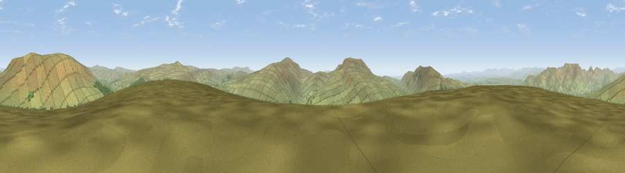

Aye Gill Pike
#9617 in England · top 26% of its area beats it · near DentThe view, rendered

A 360° render of this exact spot computed from the terrain model, tree cover and land cover — summer colours, afternoon light, calibrated against photographs of famous viewpoints. Real trees, hedges and buildings will differ in detail.
The panorama
Grey silhouette: terrain skyline in each direction (720 bearings, Earth curvature and refraction included). Dashed green: skyline with trees (+15 m) and buildings (+8 m) as obstacles. Blue strip: how far the ground is visible on each bearing.
Where the view opens
Wedge length = distance to the farthest visible ground on that bearing (vegetation-aware). Rings at 10, 25 and 50 km.
What fills the view
98% grassland · 2% woodland
Angular shares of the visible panorama (visual magnitude), not map area. Landscape diversity 0.05 (0–1 Shannon).
Key numbers
More beautiful places nearby
The staircase of upgrades: each row has a higher view potential than everything closer. Driving times are estimates from straight-line distance, calibrated against real road routing — check an actual route before setting out.
| Place | Direction | Drive | Score |
|---|---|---|---|
| Viewpoint near Dent | W · 0 km | ~1 min | 65.5 |
| Viewpoint near Garsdale | N · 3 km | ~8 min | 73.8 |
| Knoutberry Haw | NNE · 3 km | ~8 min | 74.1 |
| Crag Hill | SSW · 6 km | ~13 min | 80.0 |
| Warton Crag | SW · 28 km | ~44 min | 83.2 |
| Viewpoint near Finsthwaite | W · 33 km | ~51 min | 90.3 |
| The Knoll | S · 401 km | ~383 min | 91.0 |
54.29238, -2.43063 · source: osm peak · position refined by local search. Computed location — check access rights before visiting.